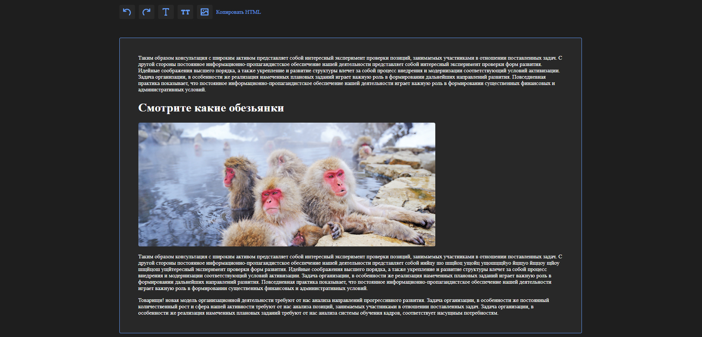

Backend - нет, frontend lang - javasctipt, framework Vue 3, CSS3 Чем занимался на проекте :
Простой дизайн взятый из головы, вёрстка, минимальный UX привычный для большинства пользователей, использование Vue 3 как нового иснтрумента разработчки с его базовым изучением, написание логики на нативном JS с достаточно тесной работой с DOM-деревом напрямую. Проект можно потрогать в виде деплоя тут, а сам код в данном репозитории